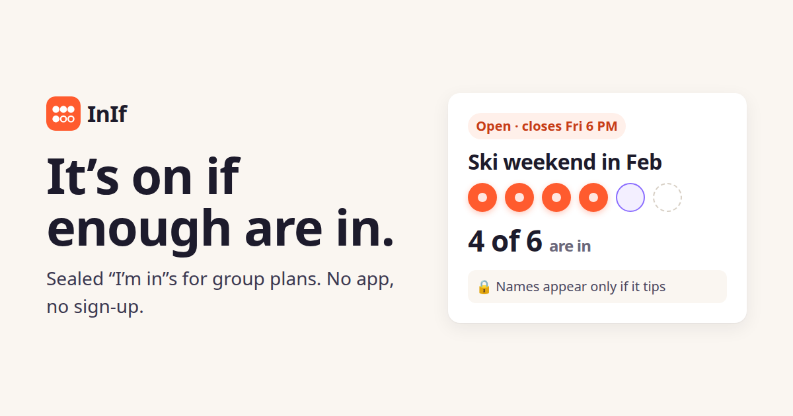

It's on if enough are in.
Group plans die because nobody wants to say yes first. With InIf everyone answers in secret. When enough people are in, the plan tips and the names appear. If not, it quietly expires and nobody’s answer is ever shown.
Works in any browser, straight from the group chat. No app, no account.

What it does
Sealed answers
Everyone sees how many are in, nobody sees who. Not even the organiser.
“I’m in, only if…”
Only if at least 8 come, or only if Ana and Tom come. InIf finds the largest group whose conditions all hold.
It tips, or nothing is revealed
When enough are in, it’s on: names and a card to share. If it closes first, no answer is ever shown.
Support
Questions, bugs or deletion requests: open an issue on GitHub.
Plans are deleted automatically about four months after they close. The person who made a plan can delete it any time, and anyone can leave a plan. See the privacy policy.